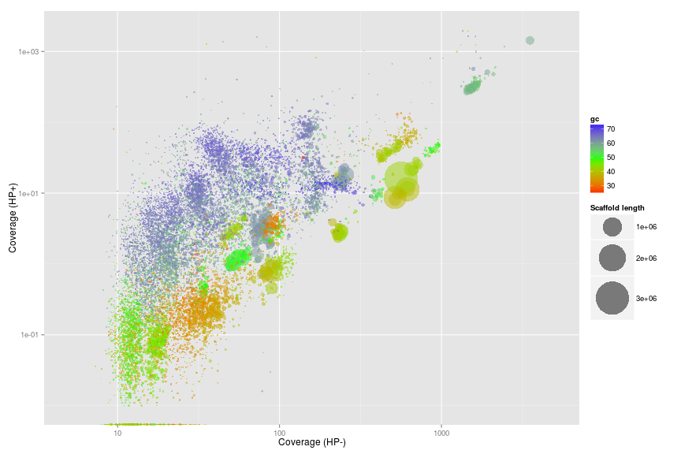
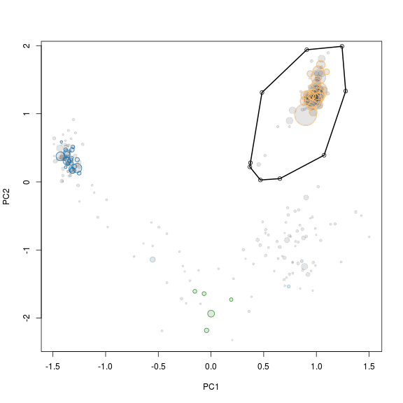

Introduction
This tutorial show how to extract individual genome bins from metagenomes using Rstudio. The guide is written in R markdown and can be found here as metagenome.workflow.Rmd. Hence, compiling the guide should recreate all plots seen in the guide.
Requirements
The guide assumes basic knowledge of Rstudio (a powerfull IDE to R). If you have never used R take a look at the introduction at code school. In order to build the R markdown guide you will need to install knitr. However, this is easily done in R by install.packages("knitr").
The basic data requirement is two metagenomes where the target species are in differential abundance. The data is assembled into 1 assembly (i.e a collection of scaffolds). The raw reads are then mapped independently to the assembly, which generates 2 coverage estimates for each scaffold. The coverage information is then integrated with all other information on each scaffold, i.e. gc content, length, kmer frequency and presence of essential genes and their taxonomic classification.
All data except the two coverage estimates (HPminus and HPplus) can be automatically generated from a FastA file of the assembled scaffolds using the script: workflow.R.data.generation.sh, see Data generation for detailed information.
The guide uses the original data from the publication.
Download the R formatted data.
Download and upack the data used in Albertsen et al., 2013. The file is approximately 70 Mb.
download.file(url='https://dl.dropbox.com/s/989dix16ugyuvrq/Albertsen2013.data.tar.gz',destfile='Albertsen2013.data.tar.gz', method = 'wget')
untar('Albertsen2013.data.tar.gz')
Load needed packages
In case you havn’t install all the needed packages, they can be installed via e.g. install.packages('vegan').
"R version 3.0.1 (2013-05-16)"
library("vegan")
library("plyr")
library("RColorBrewer")
library("alphahull")
library("ggplot2")
Read in all the data
The data is imported and a few of the data columns are renamed.
HPminus <- read.csv("HPminus.scaffold.coverage.csv", header = T)
HPplus <- read.csv("HPplus.scaffold.coverage.csv", header = T)
gc <- read.delim("assembly.gc.tab", header = T)
kmer <- read.delim("assembly.kmer.tab", header = T)
ess <- read.table("assembly.orfs.hmm.id.txt", header = F)
ess.tax <- read.delim("assembly.orfs.hmm.blast.tax.tab", header = F)
cons.tax <- read.delim("assembly.tax.consensus.txt", header = T)
colnames(kmer)[1] = "name"
colnames(ess) = c("name", "orf", "hmm.id")
colnames(ess.tax) = c("name", "orf", "phylum")
colnames(cons.tax) = c("name", "phylum", "tax.color", "all.assignments")
Merge all data on scaffolds into a single dataframe d.
d <- as.data.frame(cbind(HPminus$Name, HPplus$Reference.length, gc$gc, HPminus$Average.coverage, HPplus$Average.coverage), row.names = F)
colnames(d) = c("name", "length", "gc", "HPminus", "HPplus")
d <- merge(d, cons.tax, by = "name", all = T)
As the phylum names are a little messy we clean them for more pretty plots later.
d$phylum <- sub("<phylum>", "", d$phylum)
d$phylum <- sub("unclassified Bacteria", "TM7", d$phylum)
d$phylum <- sub("/Chlorobi group", "", d$phylum)
d$phylum <- sub("Chlamydiae/", "", d$phylum)
d$phylum <- sub(" group", "", d$phylum)
d$phylum <- sub("Amoebozoa", NA, d$phylum)
d$phylum <- sub("Opisthokonta", NA, d$phylum)
Merge all data on essential genes into a single dataframe e.
e <- merge(ess, d, by = "name", all.x = T)
e <- merge(e, ess.tax, by = c("name", "orf"), all.x = T)
e <- e[, -c(10, 11)]
We now have 2 dataframes: d which contains data on the individual scaffolds and e which contains data on essential genes. We work with 2 seperate dataframes as each scaffold can contain multiple essential genes.
The d dataframe contains the following information:
d[7:10, ]
name length gc HPminus HPplus phylum tax.color all.assignments
7 37104 43.57 468.75 37.795 Proteobacteria 1 Proteobacteria;Proteobacteria
8 10449 35.62 30.36 0.187 <NA> NA <NA>
9 3252 58.35 1951.70 1750.486 Proteobacteria 1 Proteobacteria
10 13660 52.53 854.71 33.496 Firmicutes 8 Firmicutes;Firmicutes
Where name is the name of the scaffold. HPminus is the coverage of the scaffold in the sample HPminus and HPplus is the coverage of the scaffold in the sample HPplus. phylum is the consensus phylum level assignement of the essential genes found on the scaffold. tax.color is a variable used for coloring and is arrange by decreasing number of essential genes in the total dataset. In this case there are most essential genes assigned to proteobacteria, hence it has the tax.color value of 1. all.assignments contains all taxonomic assignments for the essential genes found on the scaffold, seperated by ’;’.
The e dataframe contains the following information:
e[2:4, ]
name orf hmm.id length gc HPminus HPplus phylum.x tax.color
10010 1 TIGR00418 1325 58.19 135.11 11.39 Proteobacteria 1
100146 1 TIGR02012 1389 68.06 37.65 20.38 Actinobacteria 3
100172 3 TIGR00086 3583 66.12 17.99 29.21 Proteobacteria 1
Where name is the name of the scaffold and orf is the open reading frame within the scaffold. hmm.id is the HMM model that was identified in the orf.
Define a few functions for later use
To make the subsequent binning more easy we define a funtion to calculate basic statistics on a set of scaffolds and call it calc.genome.stats.
genome.stats <- matrix(NA, nrow = 0, ncol = 9)
colnames(genome.stats) <- c("total.length", "# scaffolds", "mean.length", "max.length", "gc", "HPminus", "HPplus", "tot.ess", "uni.ess")
calc.genome.stats <- function(x, y) matrix(c(sum(x$length), nrow(x), round(mean(x$length), 1), max(x$length), round(sum((x$gc * x$length))/sum(x$length), 1), round(sum((x$HPminus * x$length))/sum(x$length), 1), round(sum((x$HPplus * x$length))/sum(x$length), 1), nrow(y), length(unique(y$hmm.id))), dimnames = list(colnames(genome.stats), ""))
We also define a funtion to extract a subset of scaffolds, called extract.
extract <- function(x, a.def, v1, v2) {
out <- {
}
for (i in 1:nrow(x)) {
if (inahull(a.def, c(v1[i], v2[i])))
out <- rbind(out, x[i, ])
}
return(out)
}
Initial overview of the data
The calc.genome.stats function can be used to calculate basic statistics on the full dataset.
calc.genome.stats(d, e)
total.length 423095818
# scaffolds 133947
mean.length 3158
max.length 3049334
gc 54.6
HPminus 83.7
HPplus 24.6
tot.ess 8311
uni.ess 108
tot.ess is the total number of essential genes identified and uni.ess is the number of unique essential genes.
To get an initial overview of the data we subset the original dataframes d and e to only contain scaffolds > 5000 bp and store the data in the dataframes ds and es.
ds <- subset(d, length > 5000)
es <- subset(e, length > 5000)
Coverage plot - Colored by GC
The basic plot is the differential coverage plot. We simply take all scaffolds and plot the two coverage estimates HPplus and HPminus against each other. Each circle on the plot is a scaffold, scaled by it’s length and colored according to GC content. We use the ggplot2 package to plot for easy generation of legends. Clusters of scaffolds with the same color (similar gc content) represents putative genome bins.
ggplot(ds, aes(x = HPminus, y = HPplus, color = gc, size = length))
+ scale_x_log10(limits = c(5, 5000))
+ scale_y_log10(limits = c(0.01, 2000))
+ xlab("Coverage (HP-)")
+ ylab("Coverage (HP+)")
+ geom_point(alpha = 0.5)
+ scale_size_area(name = "Scaffold length", max_size = 20)
+ scale_colour_gradientn(colours = c("red", "green", "blue"))

Coverage plot - Colored by phylum level assignment of essential genes
To further underline that the clusters represents putative genome bins we color all scaffolds containing essential genes using the tax.color variable.
However, to only color scaffolds from the 7 most abundant phyla we have to do a little workaround. The tax.color variable is sorted by abundance. E.g. tax.color = 1 is assigned to the phylum with most essential genes assigned. Change the t parameter to include more or less phyla.
t <- 8
ds$tax.color[is.na(ds$tax.color)] <- 0
for (i in 1:nrow(ds)) {
if (as.integer(ds$tax.color[i]) < t & as.integer(ds$tax.color[i]) > 0) {
ds$tax.color[i] <- brewer.pal(8, "Paired")[as.integer(ds$tax.color[i])]
} else {
ds$tax.color[i] <- NA
ds$phylum[i] <- NA
}
}
pcol <- cbind(unique(ds$tax.color)[-1], unique(ds$phylum)[-1])
pcol <- pcol[order(pcol[, 2]), 1]
Now we can make the plot. It is now even more clear that the clusters do seem to represent putative genome bins.
ggplot(ds, aes(x = HPminus, y = HPplus, size = length, colour = phylum))
+ scale_x_log10(limits = c(5, 5000))
+ scale_y_log10(limits = c(0.01, 2000))
+ xlab("Coverage (HP-)")
+ ylab("Coverage (HP+)")
+ geom_point(alpha = 0.1, colour = "black")
+ geom_point(shape = 1)
+ scale_colour_manual(name = "Phyla", values = pcol)
+ scale_size_area(name = "Scaffold length", max_size = 20)
+ guides(colour = guide_legend(override.aes = list(alpha = 1, size = 5, shape = 19)))

Genome extraction
Now for the fun part of actually extracting individual genomes from the metagenome. In this example we focus on a genome related to Verrumicrobia.
Zoom on the target genome
Use the scaffolds with essential genes as a rough guide for selection of a subset of scaffolds that include the target genome. The non-target scaffolds will be removed in the next step.
The locator function is used to interactively define a subspace on the plot. We do not use ggplot2 here as it is not compatible with the locator function. As locator is interactive - I’ve added the points maunally to allow recration of the full guide. Normally you run the command def<-locator(100, type='p', pch=20) and then interactively chose the subset on the plot - remember to click finish or hit esc when you have defined your subspace on the plot. The area defined by the selected points is extracted using the ahull function.
x <- "HPminus"
y <- "HPplus"
plot(x = ds[, x],
y = ds[, y],
log = "xy",
cex = sqrt(ds$length)/100,
pch = 20,
col = rgb(0, 0, 0, 0.1),
xlim = c(55, 110),
ylim = c(0.5, 10),
xlab = "Coverage HP-",
ylab = "Coverage HP+"
)
points(x = ds[, x],
y = ds[, y],
cex = sqrt(ds$length)/100 * 0.7,
col = ds$tax.color,
lwd = 2
)
# def<-locator(100, type='p', pch=20)
def <- {}
def$x <- c(64, 66, 81, 92, 94, 81, 68, 65)
def$y <- c(2, 6.6, 7.7, 3.9, 1.4, 1, 1, 1.4)
g1.selection.A <- ahull(def, alpha = 1e+05)
plot(g1.selection.A, col = "black", add = T)

Extract scaffolds and essential genes
Extract all scaffolds and essential genes within the defined subspace using the extract function.
g1.s.A <- extract(ds, g1.selection.A, ds[, x], ds[, y])
g1.e.A <- extract(es, g1.selection.A, es[, x], es[, y])
The extracted scaffolds are stored in the variable g1.s.A and the extracted essential genes in g1.e.A.
Calculate statistics on the extracted scaffolds
The calc.genome.stats function is then used to see the basic statistics of the selected scaffolds.
calc.genome.stats(g1.s.A, g1.e.A)
total.length 9801161
# scaffolds 228
mean.length 42987
max.length 701203
gc 54.9
HPminus 79.1
HPplus 3.2
tot.ess 161
uni.ess 104
As seen on the previous plot we have other bacteria in the extracted scaffolds. This can also be seen as we have more total essential genes (tot.ess) than unique essential genes (uni.ess). As the majority of the essential genes are single copy genes we expect as many total essential genes as unique essential genes. A total of 100-106 essential genes are needed for a complete genome depending on phylum level conservation.
PCA on the subset
As there is multiple genomes in the subset we make a PCA on the tetranucleotide frequencies of the extracted scaffolds using vegan and store the information in a new variable g1.s.B.
rda <- rda(kmer[g1.s.A$name, 2:ncol(kmer)], scale = T)
scores <- scores(rda, choices = 1:5)$sites
g1.s.B <- cbind(g1.s.A, scores)
g1.e.B <- merge(g1.e.A, g1.s.B[, c(1, 9:13)], all.x = T, by = "name")
Decide on which PC’s to use
To get an overview of which principal components are most informative we use the pairs function to plot the first 5. The scaffolds are again scaled by length and colored by gc content.
rgb.c <- colorRampPalette(c("red", "green", "blue"))
rgb.a <- adjustcolor(rgb.c(max(d$gc) - min(d$gc)), alpha.f = 0.2)
palette(rgb.a)
pairs(g1.s.B[, 9:13],
upper.panel = NULL,
col = g1.s.B$gc - min(d$gc),
cex = sqrt(g1.s.B$length)/100,
pch = 20
)

Extract scaffolds using locator
PC1 and PC2 seem to seperate our target genome from the other scaffolds and are therefore used for another extraction using the locator function.
x <- "PC1"
y <- "PC2"
plot(x = g1.s.B[, x],
y = g1.s.B[, y],
cex = sqrt(g1.s.B$length)/100,
pch = 20,
col = rgb(0, 0, 0, 0.1)
)
points(x = g1.s.B[, x],
y = g1.s.B[, y],
cex = sqrt(g1.s.B$length)/100 * 0.7,
col = g1.s.B$tax.color,
lwd = 1
)
# def<-locator(100, type='p', pch=20)
def <- {}
def$x <- c(0.3740306, 0.4839196, 0.9084907, 1.2431527, 1.2781173, 1.0733242, 0.653748, 0.4689347, 0.3690356)
def$y <- c(0.2810738, 1.31294166, 1.94015545, 1.99073721, 1.33317436, 0.39235367, 0.04839772, 0.02816501, 0.22037569)
g1.selection.B <- ahull(def, alpha = 1e+05)
plot(g1.selection.B, col = "black", add = T)

Extract the scaffolds
Again the extract function is used to retrive the scaffolds in the selected subset. Note that the input to the extract function is now the previous selection i.e. g1.s.B and g1.e.B.
g1.s.C <- extract(g1.s.B, g1.selection.B, g1.s.B[, x], g1.s.B[, y])
g1.e.C <- extract(g1.e.B, g1.selection.B, g1.e.B[, x], g1.e.B[, y])
Look at the statistics of the extracted scaffolds
Lets see if we now have extracted a clean genome based on the single copy essential genes.
calc.genome.stats(g1.s.C, g1.e.C)
total.length 6823444
# scaffolds 59
mean.length 115651
max.length 701203
gc 60.9
HPminus 77.4
HPplus 3.0
tot.ess 106.0
uni.ess 103.0
There are a few duplicated “single copy genes”, however in this case it is not due to mulitple species in the bin, but real duplicates in the genome. This can be seen by looking at which genes are duplicated. In this case it is PF01795 which is often found in multiple copies, especially in large genomes.
g1.d.C <- g1.e.C[which(duplicated(g1.e.C$hmm.id) | duplicated(g1.e.C$hmm.id, fromLast = TRUE)), ]
g1.d.C[order(g1.d.C$hmm.id), c(1, 3, 8)]
name hmm.id phylum
735 PF01795.14 Verrucomicrobia
2546 PF01795.14 Verrucomicrobia
2546 PF01795.14 Verrucomicrobia
5388 PF01795.14 Verrucomicrobia
Save the extracted scaffolds
Finally we add the genome statistics to a list genome.stats and print the name of the scaffolds to a file for further refinement. If you extract multiple genomes you can keep track of them by adding them to the genome.stats variable.
genome.stats <- rbind(genome.stats, t(calc.genome.stats(g1.s.C, g1.e.C)))
rownames(genome.stats)[nrow(genome.stats)] <- "genome 1"
show(genome.stats)
total.length # scaffolds mean.length max.length gc HPminus HPplus tot.ess uni.ess
genome 1 6823444 59 115652 701203 60.9 77.4 3 106 103
write.table(g1.s.C$name, file = "genome1.txt", quote = F, row.names = F, col.names = F)